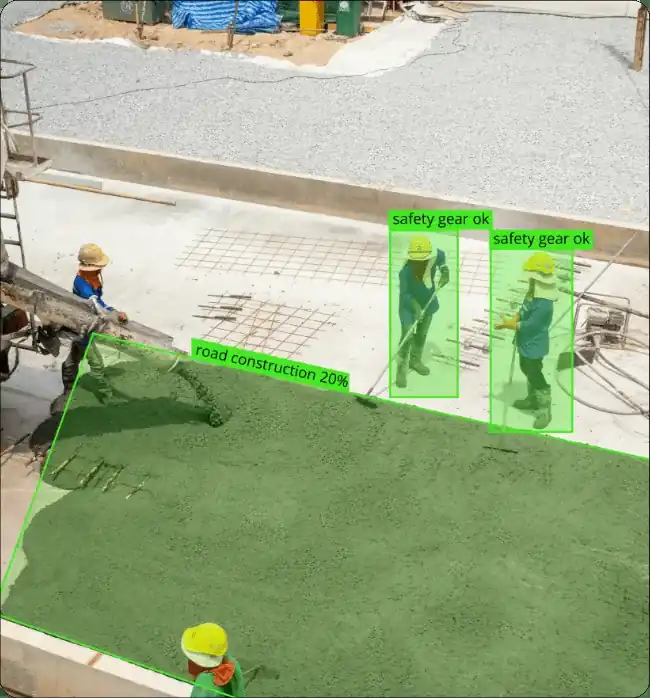

Home / Problems We Solve / Too much drone video to watch
AIToo much drone footage? AI video analysis flags what matters
Long missions produce more footage than any team has time to review, so important details get missed.
Surveillance, security and inspection teams with long missions.
Important details are missed because nobody can watch every hour of footage.
AI that detects and flags objects first, so people review what matters.
How can you review hours of drone video?
Flying the mission is only half the job. Someone still has to look through the video, and attention fades long before the footage ends.
Long missions create more footage than anyone has time to watch. Attention fades during long stretches where nothing happens, which is when important details get missed.
AI vision does the first pass. It detects and tracks objects and flags anomalies, so people spend their time checking what was flagged. Processing on the device also keeps sensitive video under your control.
Who faces this problem
Surveillance operators
Attention fades during long stretches of live video.
Security control rooms
A small team may need to monitor several feeds.
Inspection teams
Hours of footage have to be turned into findings.
Signs you have this problem
- Footage piles up faster than your team can review it
- Important details are found late or by chance
- Operators watch live video for long stretches
- Your footage is too sensitive to upload to a cloud service
What to look for
- Object detection and tracking on live video
- Anomaly flagging for your use case
- On-device processing with no cloud upload
- A person still making the final decision
The main causes
Volume
Every flight adds more video than a team can review.
Fatigue
Attention falls off during long stretches of nothing happening.
Sensitive footage
Cloud analysis can mean sending video outside your control.
Before and after
How to solve it, step by step
- 1
Capture
Live or recorded payload video comes in.
- 2
Detect
Objects are detected and tracked.
- 3
Flag
Anomalies are marked for attention.
- 4
Decide
Your team reviews what was flagged.
Common mistakes
- Expecting AI to work in every condition without testing
- Removing human review from important decisions
- Testing on sample footage rather than your own
- Sending sensitive video to a cloud service without checking first
Questions to ask a supplier
- How well does it work on our own footage and conditions?
- How often does it miss things or raise false alerts?
- Does it work live, on recordings, or both?
- Where is the video processed and stored?
What to use
Common questions
Can AI analyse drone video in real time?
Yes. Our AI vision stack detects and tracks objects in live and recorded payload video.
Does the video go to the cloud?
No. It is processed on the device, so the footage does not have to leave your control.
Does AI replace the operator?
No. It draws attention to what may matter. A person should review results before acting on them.
What can AI detect in drone video?
Our AI vision stack detects and tracks objects and flags anomalies in live and recorded video. How well it works depends on your use case, so test it with your own conditions.
What causes false alerts in AI video analysis?
Often poor light, shadows, distance or scenes unlike those the model has seen. Testing with your own footage helps show what to expect.
Related problems
Hidden faults in solar plants
A faulty panel can look normal, and checking thousands by hand takes too long.
Read this guideLong power lines to inspect
Transmission lines run for kilometres across difficult land, and climbing each tower is slow and risky.
Read this guideSlow land surveys
Ground surveys are slow, hard over rough terrain, and only capture the points someone walked to.
Read this guideFacing this problem?
Tell us about your mission and our engineers will suggest the right platform or configuration.